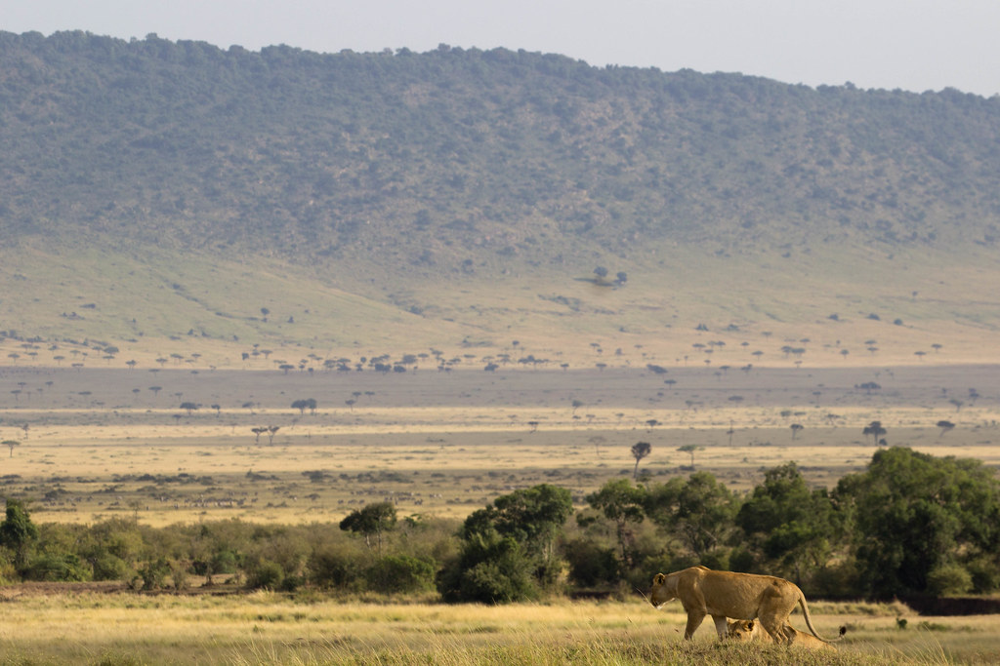
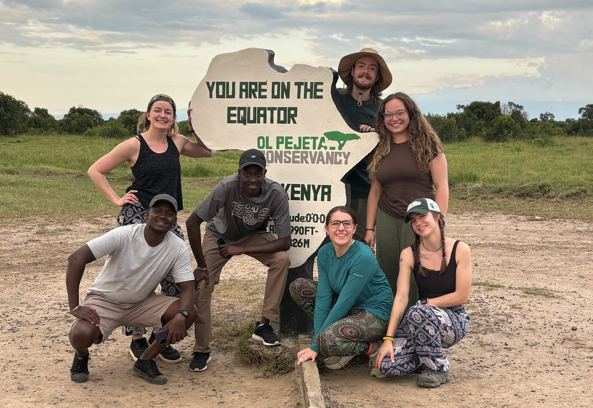

Our Pillars
What Guides Our Work

Science
Rigorous, peer-reviewed research built on one of the longest continuous datasets on any wild mammal. We work in the open, sharing data and findings so others can build on them.
Our research →
Conservation
Our long-term data informs hyena conservation across the wider Mara–Serengeti ecosystem. We collaborate with regional scientists and Kenyan institutions, including the Wildlife Research and Training Institute (WRTI), on shared conservation goals.
Conservation & threats →
Community
We are part of the Maasai Mara. We hire and train Maasai staff and researchers, give talks at lodges, schools, and to local partners, and work directly to reduce human-hyena conflict.
Community outreach →
Education
We train and mentor the next generation of scientists, from American and Kenyan undergraduates to graduate students, and help build STEM capacity in Kenya by supporting young Maasai researchers.
Train with us →